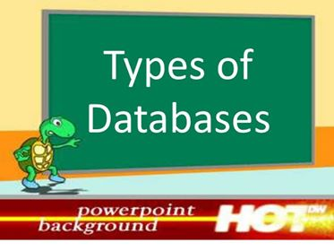

Types of Database Management Systems
There are several types of database management systems. Here is a list of seven common database management systems:
1-Hierarchical databases
2-Network databases
3-Relational databases
4-Object-oriented databases
5-Graph databases
6-ER model databases
7-Document databases
8-NoSQL databases
